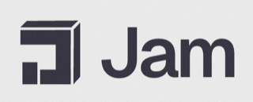

Tell search engines you’re here.
Claude is said to search the web with Brave. Send your page to Brave Search and Viesearch from your AI app. You get their receipt: ‘received’, not ‘indexed’. Free.
Inspired by the team at 
-
Step 1: Plug it into your AI once.
{{MCP_URL}}Our server’s address. No sign-in.
Show me how, for my app
Claude
claude.ai, Claude Desktop, Claude Code- Open Customize, then Connectors.
- Click + Add, then Add custom connector.
- Name it indexing-dispatch, paste the server address, click Continue.
- Under Authentication, choose No sign in, then click Add.
- In a chat, click + (lower left), open Connectors and switch indexing-dispatch on.
Team or Enterprise: an owner adds it under Organization settings, Connectors, then each person clicks Connect. The no-cost plan allows one custom connector.
Claude Code:
claude mcp add --transport http indexing-dispatch {{MCP_URL}}Codex
ChatGPT desktop app, IDE extension, CLIThe ChatGPT desktop app, the Codex IDE extension and the Codex CLI share one setup, so adding it in one place covers all three.
ChatGPT desktop app: Settings, MCP servers, Add server. Name it indexing-dispatch, choose Streamable HTTP, paste the server address, save, then Restart. Type
/mcpin the message box to see it listed.IDE extension: gear menu, MCP servers, Add server. Same fields, save, then Restart extension.
CLI: run this, then
codex mcp listto check it’s there.codex mcp add indexing-dispatch --url {{MCP_URL}}Or edit the config file
~/.codex/config.toml(or.codex/config.tomlin a trusted project):[mcp_servers.indexing-dispatch] url = "{{MCP_URL}}"Cursor
mcp.jsonAdd this to
~/.cursor/mcp.jsonto use it in every project, or to.cursor/mcp.jsonfor one project. If the file already has servers, add the indexing-dispatch entry inside the existingmcpServers.{ "mcpServers": { "indexing-dispatch": { "url": "{{MCP_URL}}" } } }You can then turn it on or off from the Customize page in Cursor’s sidebar.
ChatGPT
Web: Business, Enterprise and EduWorks on ChatGPT Business, Enterprise and Edu, on the web (not mobile). On Business, an admin or owner adds it. No Developer Mode needed.
- Go to Plugins.
- Select the plus button, then Add custom MCP server.
- Name it indexing-dispatch.
- Under Connection, paste the server address.
- Leave authentication off.
- Tick I understand and want to continue.
- Choose Create as a plugin, then install it.
- In a new chat, type @ and pick indexing-dispatch.
Pro can only connect read-only servers, and this one submits a form, so Pro can’t use it. Use Claude, Codex or Cursor instead, or submit by hand at search.brave.com/submit-url.
-
Step 2: Paste your website link.
Any page works. Your homepage is a great start. One page here; to send several at once, open the panel in your AI app and put one per line (commas or spaces work too).
-
Step 3: Your email for Viesearch.
See the prompt
Check my site, then send to Brave and Viesearch Check my site, then send to Brave and Viesearch
Please check my website, then send its main page to Brave Search and Viesearch. Use the indexing-dispatch connector (MCP server: {{MCP_URL}}). My main page is: [paste your page address here] My contact email for Viesearch is: [your contact email for Viesearch] Do these in order: 1. Call the tool audit-site once with targetUrl set to my page. It only reads; it changes nothing. 2. Summarise what it found, and list any drafted files it returned (llms.txt, JSON-LD, robots.txt lines) so I can review them. Say they are drafts. 3. Then call the tool submit-brave-url one time with the same page. It usually takes 10 to 40 seconds. Wait for the result. 4. Then call the tool submit-viesearch-url one time with the same page and my email as contactEmail. The email goes only to Viesearch; it is never stored anywhere else. If the email above is still the bracketed placeholder, ask me for it first and use what I give you. Rules: - Report each tool's status and message word for word. If any tool returns an errorCode or retryAfterSeconds, include them. - "accepted" means that site confirmed it got the URL. It doesn't mean the page is indexed or listed. Never say or imply it is, or will be. - Don't retry any tool, even if it fails or times out. If a result says to stop, stop. - If a result says verification_required, tell me to finish that one by hand instead: Brave at https://search.brave.com/submit-url, Viesearch at https://viesearch.com/submit. - For Viesearch, remind me to check my inbox for their Confirm Submission email: my site enters their review queue only after I click it. - If you don't have a tool I asked for, tell me which one is missing and stop. Don't say you ran anything you didn't.Just send to Brave
Please send one page of my website to Brave Search for me. Use the indexing-dispatch connector (MCP server: {{MCP_URL}}). Call its tool submit-brave-url one time, with targetUrl set to: [paste your page address here] How to do it: - Call the tool once. Don't retry, even if it times out. - It usually takes 10 to 40 seconds. Wait for the result. - Tell me the status it returned and Brave's message, word for word. If there's a confirmationText, show me that too. - "accepted" means Brave confirmed it got the URL. It doesn't mean the page is indexed yet. Say that plainly. - For any other status, tell me which one, include the errorCode and retryAfterSeconds if there are any, and tell me I can also submit it myself at https://search.brave.com/submit-url - If you don't have the submit-brave-url tool, tell me and stop. Don't say you submitted anything.Just send to Viesearch
Please send one page of my website to Viesearch for me. Use the indexing-dispatch connector (MCP server: {{MCP_URL}}). My page is: [paste your page address here] My contact email for Viesearch is: [your contact email for Viesearch] My email goes only to Viesearch with the submission. Call its tool submit-viesearch-url one time, with targetUrl set to my page and contactEmail set to my email. If the email above is still the bracketed placeholder, ask me for it first and use what I give you. How to do it: - Call the tool once. Don't retry, even if it times out. - It usually takes 10 to 40 seconds. Wait for the result. - Tell me the status it returned and Viesearch's message, word for word. If there's a confirmationText, show me that too. - "accepted" means Viesearch confirmed it got the URL. It doesn't mean the site is listed yet. Say that plainly. - Whatever the result, remind me to check my inbox for their Confirm Submission email: my site enters their review queue only after I click it. - If the status is verification_required, the page is showing a human check the tool won't solve. Tell me to finish it by hand at https://viesearch.com/submit instead. - If the status is rejected and the message says the URL is already registered, the page is already in Viesearch. - For any other status, tell me which one, include the errorCode and retryAfterSeconds if there are any. - If you don't have the submit-viesearch-url tool, tell me and stop. Don't say you submitted anything.“Accepted” means the site got it. Nobody can promise indexing or listing.
Submitting elsewhere too? More places to submit yourself — directories no agent can submit to, with each one’s own submit link.
Brand new. We’re testing it in public. See our test
How it works
- Add the server address in your AI app and switch it on.
- Paste your link and your Viesearch email on this page and press Copy my prompt.
- Paste the prompt in a chat. Your AI runs the tools and reports each receipt: Brave's Success words, and Viesearch's check-your-email reminder.
Illustration. Brave’s words are from our real test on Oct 31; Viesearch asks you to confirm by email before it reviews your site.
More What Viesearch is, the four tools, what the answers mean, our test, privacy and terms
What is Viesearch?
A human-reviewed web directory. A person looks at every site before it’s listed.
Give us the page and a contact email. We fill Viesearch’s submit form with both, leave everything else blank, press Submit once, and report exactly what Viesearch showed. Your email goes only to Viesearch with the submission: it is never stored, logged, or shown back to you.
- Reviewed by people. Viesearch’s team checks each submission, so listing takes a while.
- One page, one email. The tool submits a single URL with a single contact email. Nothing else is filled in.
- The honest part. “Accepted” means Viesearch confirmed it got the URL. It doesn’t mean the site is listed yet. If Viesearch shows a human check, the tool stops and tells you to finish by hand instead.
The four tools
One connection, four tools, all free. Each one reports what it actually saw. None of them retries behind your back.
- submit-brave-url
- Sends one page to Brave Search through Brave’s own submit page. “Accepted” means Brave confirmed it received the URL, not that the page is indexed.
- audit-site
- Reads your page,
robots.txt,llms.txtand sitemap. Lists what’s missing and drafts the files for you to review. It only reads. - submit-viesearch-url
- Sends one page to Viesearch with your contact email. The email goes only to Viesearch: never stored, never logged, never shown back. “Accepted” means Viesearch confirmed it received the URL, not that the site is listed. Then check your inbox for their Confirm Submission email: your site enters their review queue only after you click it. Stops instead of solving any human check.
- render-submission-canvas
- Opens a small panel inside your AI app where you paste links, pick tools, run them and copy the results. Needs an app that can show panels.
What the answers mean
From Brave you’ll get one of these. Plain answers, no spin.
- accepted
- Brave showed “Thank you for your submission.” Brave has your URL. When it gets indexed is up to Brave.
- verification_required
- Brave wanted a human check. The tool doesn’t solve those, so submit that one yourself on Brave’s page.
- rejected
- Brave turned the URL down.
- timeout
- Brave didn’t give a clear answer within 30 seconds. Check before you send it again.
- error
- Something stopped it on our side, such as the hourly limit or that URL already being sent today. The reason comes with it.
It handles 12 Brave submissions an hour per server, shared by everyone using it, and sends the same URL at most once every 24 hours.
From Viesearch you’ll get accepted only when its page shows an explicit confirmation. verification_required means Viesearch showed a human check: finish it yourself at viesearch.com/submit. rejected with “already a registered user” means the page is already in Viesearch. Viesearch runs 6 submissions an hour per server, and repeats a URL at most once every 24 hours.
We’re testing it in public
We don’t know yet if this helps. So we’re measuring it on our own site.
- Oct 31, 2026 We ran it for real on our own sites. Brave said it received 3 of our links.
- About 1.5 hours later A
site:search in Brave and in Bing showed no pages from dispatch.tatinc.us. - Nov 6, 2026 (check late) The Nov 6 re-check didn’t happen on time. On Nov 8 a read-only
site:check in Brave was rate-limited, so there’s no result to report yet. We check again and post the result, either way.
Want to follow along or try it on your own site? Email emailme@tatinc.us.
Privacy
- For each Brave submission the server keeps one log line: the page address without anything after a
?, the result, any error code, and how long it took. - Nothing about who sent it, and no request headers.
- Brave receives the URL you submit, which is the point.
- Viesearch receives the URL and the contact email you give, which is the point. Nothing else about you goes anywhere.
- The server runs on Cloudflare Workers (the submit tools use Cloudflare’s browser service), and Cloudflare may keep its own logs.
- The other tools log only the tool name, the result and timing. The Viesearch tool logs the same as Brave, except your contact email address is never logged, stored, or echoed back.
- The audit requests your page and its
robots.txt,llms.txtand sitemap, identifying itself asindexing-dispatch-audit/1.0. - This page has no cookies and no analytics.
Terms
- Indexing Dispatch is not affiliated with Brave or Viesearch.
- Only submit pages you own or have permission to submit.
- submit-brave-url uses Brave’s public submit form, one URL at a time, and follows Brave’s terms.
- submit-viesearch-url uses Viesearch’s public submit form with the contact email you provide, and follows Viesearch’s terms.
- Neither tool solves CAPTCHAs or gets around human checks. They report
verification_requiredinstead. - TAT Inc runs the hosted server and can change it or switch it off.
Help
Stuck, or found a bug? Email emailme@tatinc.us.